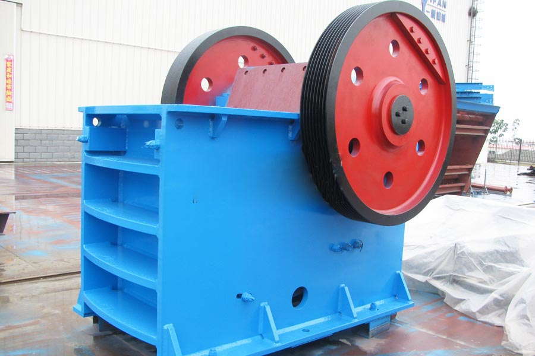
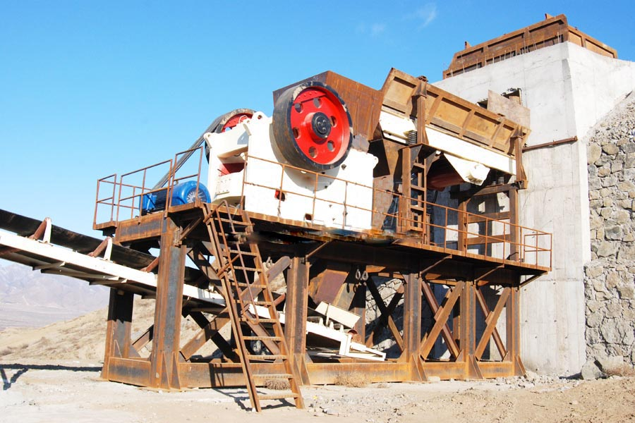

- Home >
- stone crusher >
- jaw crusher spare parts

Construction waste crushing production line

Mobile construction waste crushing station for urban construction waste crushing.
jaw crusher spare parts
Jaw crusher is the primary quarry crushing equipment, mainly used for crushing chunks of rock material. Jaw crusher is widely used in mining metallurgy, building material, highway, railway, water conservancy and chemical industry. Is the preferred machine mining crushing machinery. In accordance with the feed opening width size into large, medium and small three kinds, inlet width is greater than 600MM for large crusher, inlet width 300-600MM for medium-sized crushers, feed opening of a width less than 300MM for small crusher.

Features
1. Expresses deep crushing chamber design, the feed capacity and yield than normal jaw broken more than doubled;
2. its crushing ratio, uniform particle size;
3. Gasketed nesting population adjustment device, reliable and convenient, adjustment range, increase the flexibility of the device;
4. The system is safe and reliable, easy to replace parts, small maintenance workload;
5. The structure is simple, reliable, low operating costs.
6. Equipment Energy: single saving 15% to 30%, saving the system more than doubled;
7. nesting population adjustment range, can meet the requirements of different users;
8. Low noise, less dust, environmental protection crusher
Technical Parameters
| Model Specifications |
Inlet size (MM) |
The maximum feed size (MM) |
Discharge Adjustment range (MM) |
Processing capacity (T/H) |
Motor (KW) |
Weight (T) |
| PE-250×400 | 250×400 | 210 | 20-60 | 3-13 | 15 | 2.8 |
| PE-400×600 | 400×600 | 340 | 40-100 | 10-35 | 30 | 6.5 |
| PE-500×750 | 500×750 | 425 | 50-100 | 25-60 | 55 | 10.6 |
| PE-600×900 | 600×900 | 500 | 65-180 | 30-85 | 55-75 | 15.5 |
| PE-750×1060 | 750×1060 | 630 | 80-180 | 72-150 | 90-110 | 28 |
| PE-800×1060 | 800×1060 | 680 | 100-200 | 85-143 | 90-110 | 30 |
| PE-870×1060 | 870×1060 | 750 | 170-270 | 145-235 | 90-110 | 30.5 |
| PE-900×1060 | 900×1060 | 780 | 200-290 | 170-250 | 90-110 | 31 |
| PE-900×1200 | 900×1200 | 780 | 95-255 | 100-240 | 110-132 | 49 |
| PE-1000×1200 | 1000×1200 | 850 | 195-280 | 190-275 | 110-132 | 51 |
| PE-1200×1500 | 1200×1500 | 1020 | 150-300 | 250-500 | 160 | 100.9 |
| PEX-150×750 | 150×750 | 120 | 18-48 | 5-16 | 15 | 3.5 |
| PEX-250×750 | 250×750 | 210 | 25-60 | 8-22 | 22 | 4.9 |
| PEX-250×1000 | 250×1000 | 210 | 25-60 | 10-32 | 30-37 | 6.5 |
| PEX-250×1200 | 250×1200 | 210 | 25-60 | 13-38 | 37 | 7.7 |
| PEX-300×1300 | 300×1300 | 250 | 20-90 | 10-65 | 75 | 11 |

Working Principle
Jaw crusher broken song moving extrusion type, motor-driven belt and pulley, through the eccentric shaft to move up and down movement of the jaw, when the movable jaw rise between toggle plate and moving jaw angle becomes larger, thus promoting the moving jaw plate to fixed jaw plate close, while the material is squeezed, rub, grind, such as multiple broken; when the movable jaw down, between toggle plate and moving jaw angle smaller, movable jaw plate leave the fixed jaw under the action of the rod, the spring plate, then the crushed material from the crushing chamber discharge port, along with the continuous rotation of the motor periodically mobile jaw crusher crushing and nesting, the crusher to achieve mass production. Jaw crusher may occur troubleshooting method.
Large jaw crusher is mainly used for a variety of ores and bulk materials of medium-grained broken, can be broken compressive strength of not more than 320Mpa materials, sub-coarse broken and fine broken two kinds. The complete series of product specifications, the feed particle size of 600mm ~ 1500mm, is the primary crushing device of choice.
Leave Me A Message, Now
If you have any questions regarding equipment prices, production line configuration or other problems, you can send a message to us, we will contact you soon.